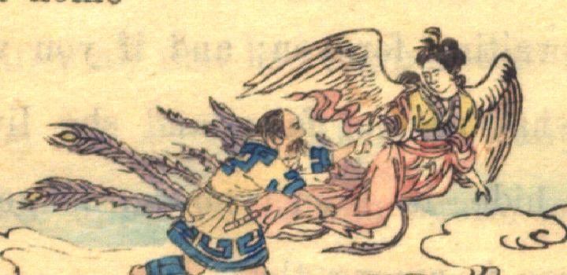

松の木の精。頭髪を中国風に結い、中国風の黄色の着物と紅色の袴をまとっている。紅色の肩衣を腕に掛け、袴の後ろに紫色の孔雀の尾のような裳状のものをつけている。背に白い翼が生えており、脚は描かれていない。迦陵頻伽のような姿である。片手でアイヌ装束の男の手をとり、誘うように飛んでいる。
著作者：B.H.Chamberlain／出典：親書誌：U426_nichibunken_0110：The hunter in fairy land／日付：2006／資源識別子：U426_nichibunken_0110_0001_0000
Copyright (c)2010- International Research Center for Japanese Studies, Kyoto, Japan. All rights reserved.